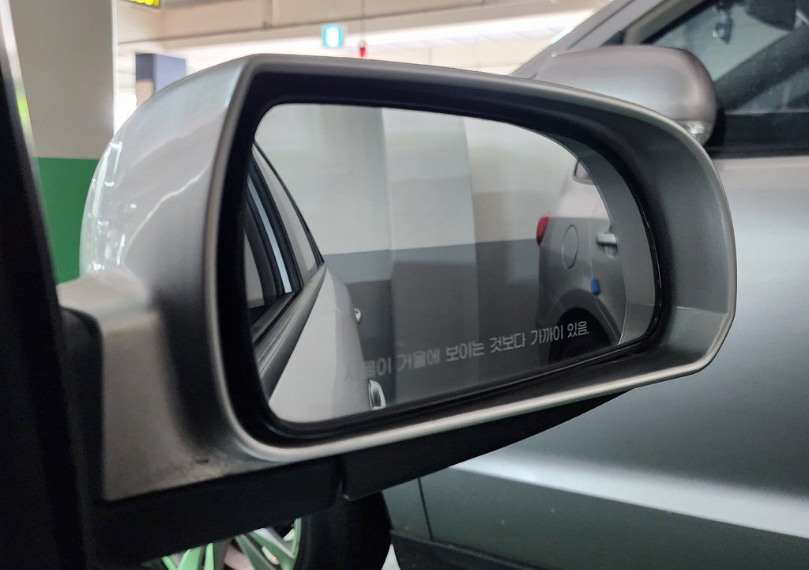
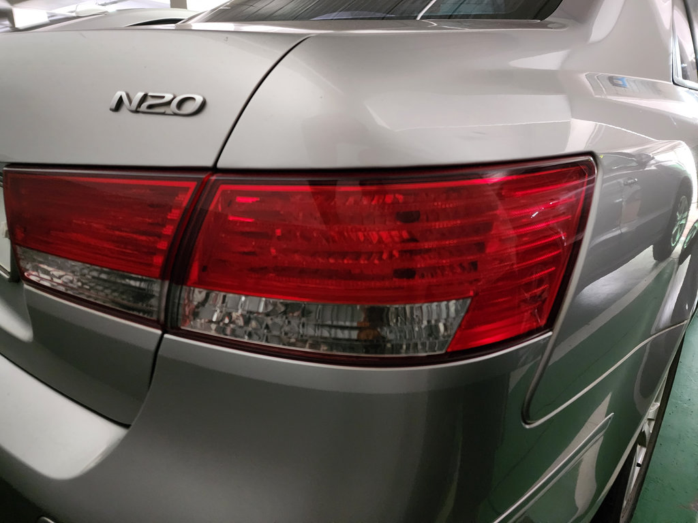
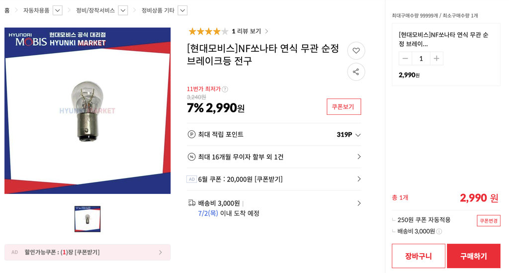
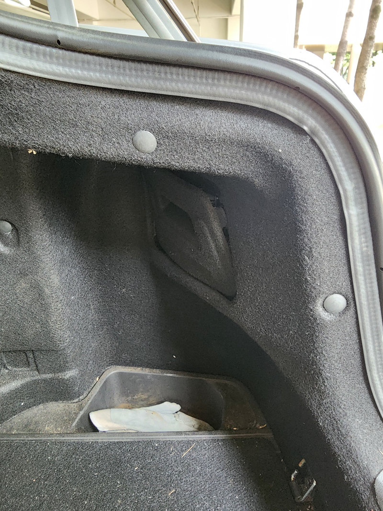
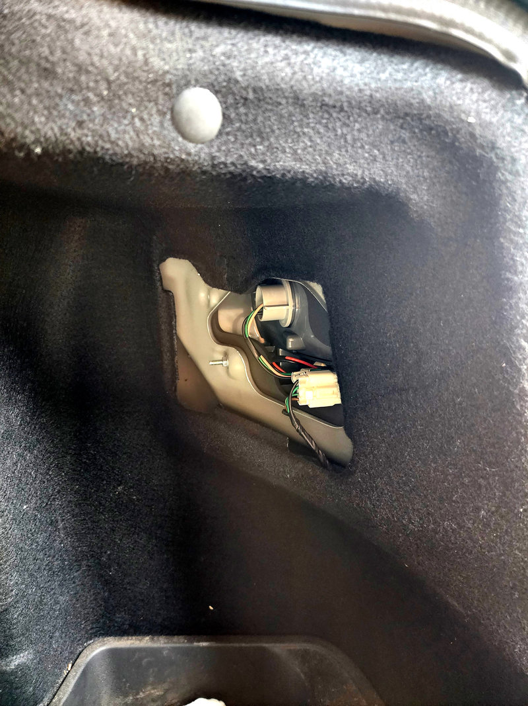
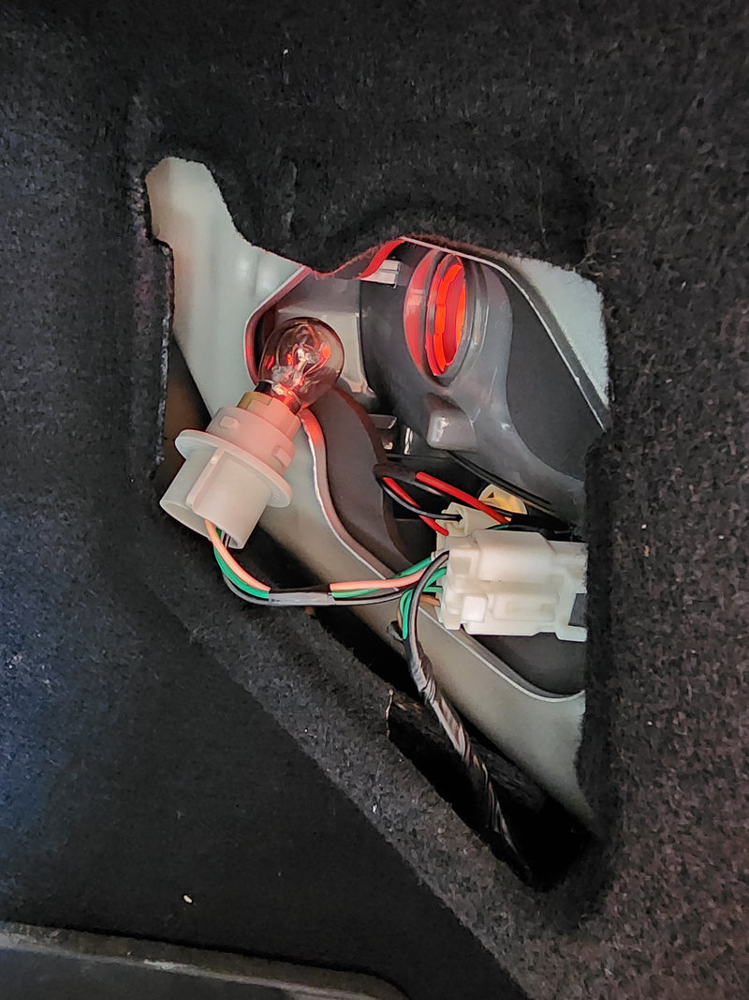
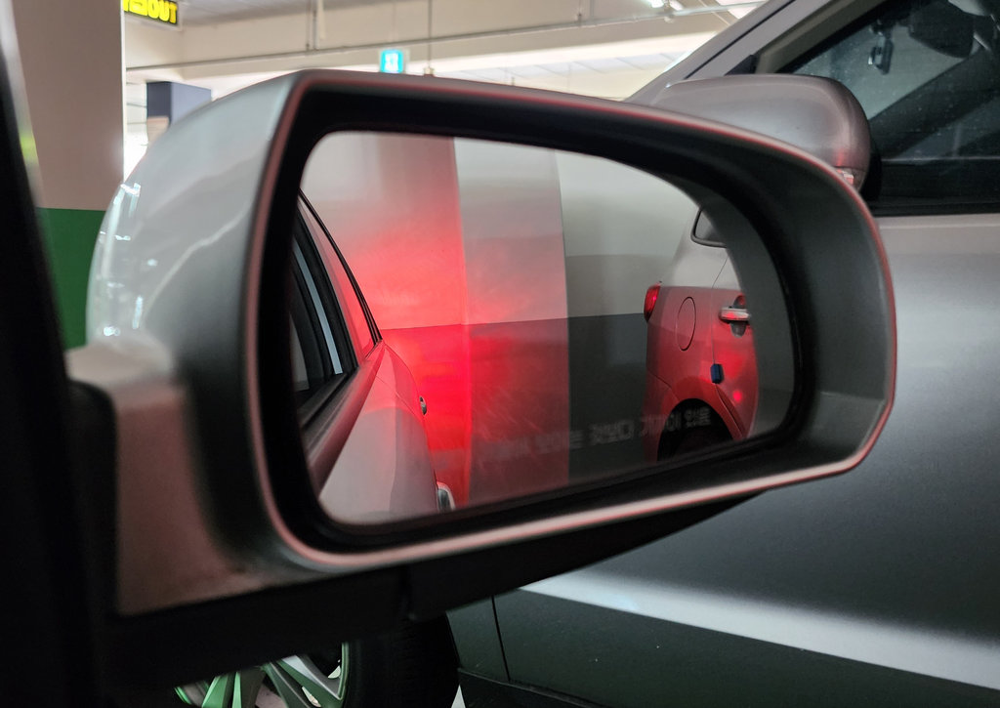

브레이크 등이 나간 걸 알게 된 건 주차장에서 후진하다 옆 차 유리에 내 차가 비쳐 보였을 때다. 왼쪽 브레이크 등만 들어오고 오른쪽은 꺼져 있었다. 사이드 미러로 확인해 보니 확실했다. 아래처럼 차 뒤를 벽에 붙여 대고 브레이크를 밟았을 때 확인할 수 있다.

참고로 브레이크 등이 들어오는 위치는 아래와 같다. 트렁크 문이 아니라 차체에 붙어 있는 큰 렌즈 부위다.

준비물 - 전구
필요한 건 교체할 전구 하나다. 카센터에 들렀는데 사장님이 바쁘신 거 같았다. 직접 해보려고 한다고 전구만 달라고 했더니 “직접 하시면 서비스 드릴게요” 하셨다. 카센터 사장님 감사드려요!
인터넷에서 검색하면 아래와 같이 나온다. 차종에 따라 검색하면 된다.

교체 과정
  
트렁크를 열면 좌우 안쪽 구석에 램프 박스 커버가 있다. 부드러운 재질로 간단히 조립돼 있기 때문에 쉽게 열 수 있다. 위 두 번째 사진에서 보이는 브레이크 등 소켓을 반시계 방향으로 돌려 빼고 소켓에서 전구도 같은 방향으로 돌려 빼면 된다. 새 전구를 끼우고 소켓을 다시 잠그고 커버를 닫으면 끝이다.
점등 확인
결과 확인 역시 사이드 미러로 혼자 확인하면 된다.

좌우 모두 균일하게 켜지면 성공이다.
카센터 사장님이 서비스로 주신 전구 덕에 비용도 0원. 다른 등에 비해 브레이크 등이 더 쉬운 것 같다. 헤드라이트가 본넷을 열어야 해서 약간은 귀찮았던 기억이 난다.
여러분도 전구 교체는 직접 하길. 트렁크 열고 5분이면 끝난다.